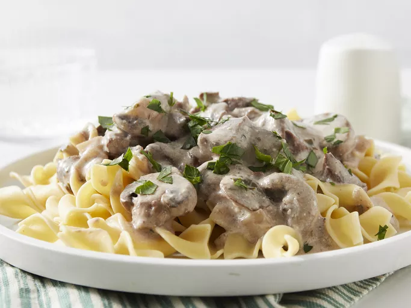

Homemade lasagna isn't as hard to make as it seems. Don't be intimidated by all the layers of delicious Italian flavor — try this homemade lasagna recipe today!
A fun chicken recipe the kids can help prepare. They love crushing the crackers. It does not matter if the measurements aren't perfect, just wing it!

A deliciously rich and creamy beef stroganoff that's easy to prep in a slow cooker with little-to-no fuss. It smells wonderful and is tasty like no other stroganoff you've had before thanks to the addition of cream cheese along with the sour cream. Serve over hot, buttered flat noodles.
